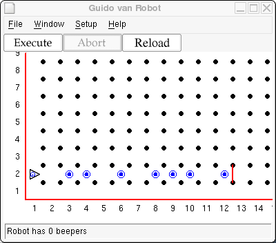
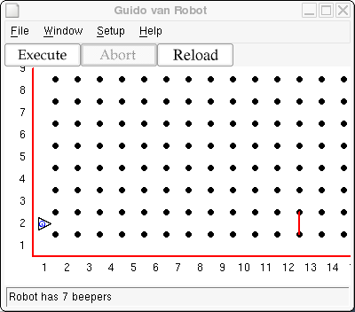

When Guido was a teenager, he was a bit rebellious. His parents had always told him every little thing to do: every turn to make and every step to take. He finally proclaimed "I can make my own decisions!" and went on to explain to his parents how to talk to him to have that capability.
He explained about boolean expressions, which could be only true or false. Guido would do different things depending on if some condition were true or false. Here was an example he gave:
if next_to_a_beeper:
pickbeeper
Guido has the ability to sense his world and to act accordingly. "Golly, you're growing up fast!" proclaimed his parents. They asked what things Guido could sense, and he provided this list:
| front_is_clear | True if there is no wall directly in front of Guido. False if there is. |
| front_is_blocked | True if there is a wall directly in front of Guido. False otherwise. |
| left_is_clear | True if there is no wall immediately to Guido's left. False if there is. |
| left_is_blocked | True if there is a wall immediately to Guido's left. False otherwise. |
| right_is_clear | True if there is no wall immediately to Guido's right. False if there is. |
| right_is_blocked | True if there is a wall immediately to Guido's right. False otherwise. |
| next_to_a_beeper | True if Guido is standing at an intersection that has a beeper. False otherwise. |
| not_next_to_a_beeper | True if there is not beeper at the current intersection. False if there is a beeper at the current intersection. |
| any_beepers_in_beeper_bag | True if there is at least one beeper in Guido's beeper bag. False if the beeper bag is empty. |
| no_beepers_in_beeper_bag | True if Karel's beeper bag is empty. False if there is at least one beeper in the beeper bag. |
| facing_north | True if Guido is facing north. False otherwise. |
| not_facing_north | True if Guido is not facing north. False if he is facing north. |
| facing_south | True if Guido is facing south. False otherwise. |
| not_facing_south | True if Guido is not facing south. False if he is facing south. |
| facing_east | True if Guido is facing east. False otherwise. |
| not_facing_east | True if Guido is not facing east. False if he is facing east. |
| facing_west | True if Guido is facing west. False otherwise. |
| not_facing_west | True if Guido is not facing west. False if he is facing west. |
Guido has not completed his community service to graduate from high school, so he is assigned to pick up trash along 2nd Street. Construct a world that has beepers spreadout along 2nd Street between 1st Avenue and the wall on the East corner of 12th Avenue. There can only be one beeper at any given corner, but a corner may or may not have a beeper on it. Guido should start at 1st Avenue and 2nd Street facing East.
A starting world would look something like this:

Have Guido go down 2nd Street, picking up all beepers he finds. Remember if there isn't a beeper at an intersection and you ask Guido to pick one up, he will complain and shutdown. Use one of the tests from the table above to make a decision whether there is a beeper available to pick up. After he gets to 12th Street, he should take all the beepers with him back to his starting position, face East again, and turnoff.
With the starting position above things should end up like this:

Copyright © 2003 Roger Frank.